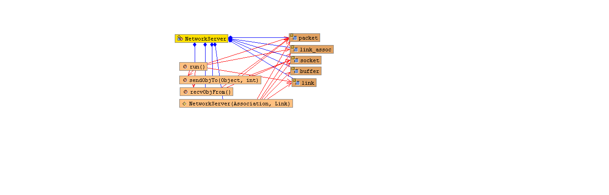

java.lang.Threadlspsim.NetworkServer
java.lang.Threadlspsim.NetworkServer
|
|||||||||
| PREV CLASS NEXT CLASS | FRAMES NO FRAMES | ||||||||
| SUMMARY: NESTED | FIELD | CONSTR | METHOD | DETAIL: FIELD | CONSTR | METHOD | ||||||||
java.lang.Object
public class NetworkServer
This class implements the simulation underlying point-to-point network

| Nested Class Summary |
|---|
| Nested classes/interfaces inherited from class java.lang.Thread |
|---|
java.lang.Thread.State, java.lang.Thread.UncaughtExceptionHandler |
| Field Summary |
|---|
| Fields inherited from class java.lang.Thread |
|---|
MAX_PRIORITY, MIN_PRIORITY, NORM_PRIORITY |
| Constructor Summary | |
|---|---|
NetworkServer(Association a,
Link l)
Creates a new instance of NetworkServer |
|
| Method Summary | |
|---|---|
java.lang.Object |
recvObjFrom()
|
void |
run()
|
void |
sendObjTo(java.lang.Object o,
int desPort)
|
| Methods inherited from class java.lang.Thread |
|---|
activeCount, checkAccess, countStackFrames, currentThread,
destroy, dumpStack, enumerate, getAllStackTraces,
getContextClassLoader, getDefaultUncaughtExceptionHandler, getId,
getName, getPriority, getStackTrace, getState, getThreadGroup,
getUncaughtExceptionHandler, holdsLock, interrupt, interrupted,
isAlive, isDaemon, isInterrupted, join, join, join, resume,
setContextClassLoader, setDaemon, setDefaultUncaughtExceptionHandler,
setName, setPriority, setUncaughtExceptionHandler, sleep, sleep, start,
stop, stop, suspend, toString, yield |
| Methods inherited from class java.lang.Object |
|---|
clone, equals, finalize, getClass, hashCode, notify, notifyAll, wait, wait, wait |
| Constructor Detail |
|---|
public NetworkServer(Association a,
Link l)
throws java.lang.Exception
java.lang.Exception| Method Detail |
|---|
public void run()
run in interface java.lang.Runnablerun in class java.lang.Threadpublic void sendObjTo(java.lang.Object o,
int desPort)
public java.lang.Object recvObjFrom()
|
|||||||||
| PREV CLASS NEXT CLASS | FRAMES NO FRAMES | ||||||||
| SUMMARY: NESTED | FIELD | CONSTR | METHOD | DETAIL: FIELD | CONSTR | METHOD | ||||||||